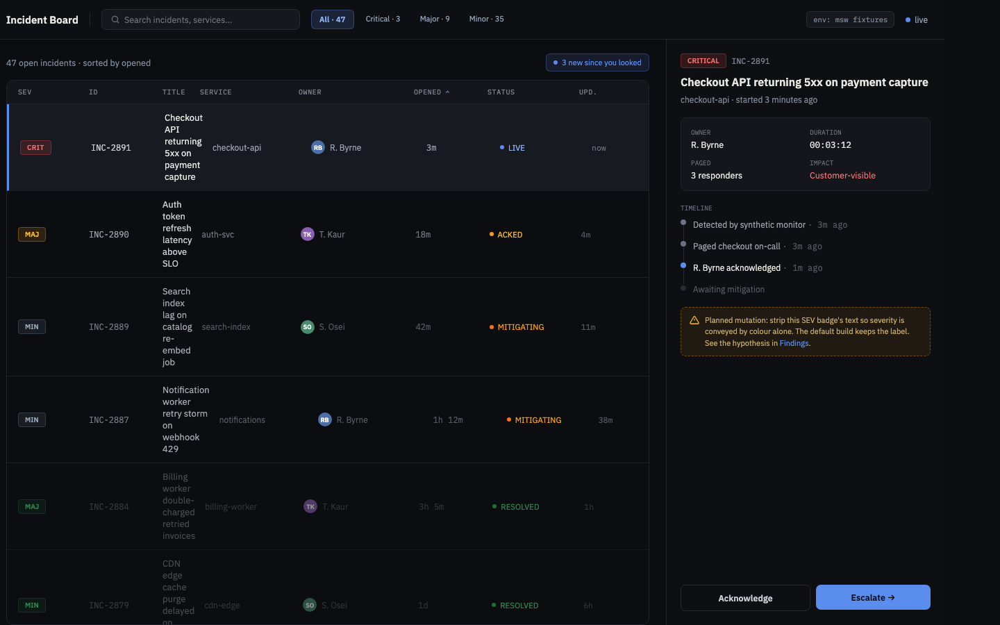
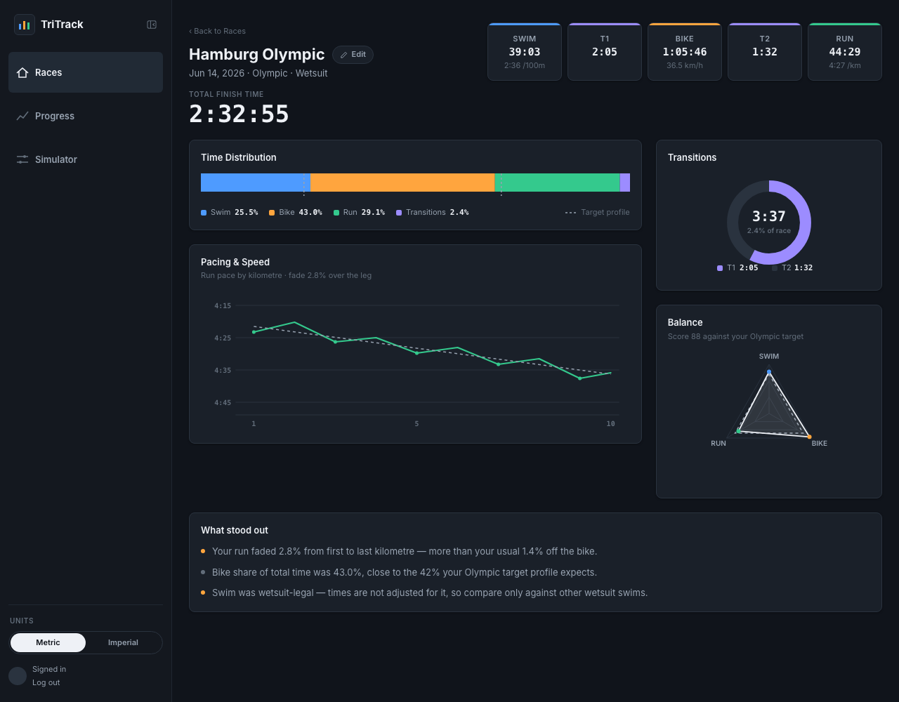
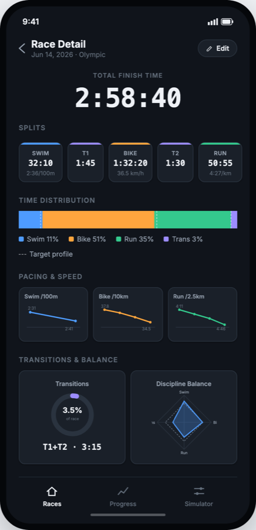

One visual base for all my apps, checked by someone with a trained eye
I'm a frontend developer, not a designer. I keep building dark, data-heavy web apps, and each one gets a slightly different palette and a hand-rolled app shell. I'd like your help settling the base once, so every future project starts from something a designer has looked at.
CoversKlaxon · TriTrack · the next project
Time askedAbout 60 minutes
OutputOpinions, not files
What I'm asking for
One working session, on a call or in comments on screenshots, whichever suits you. You don't need to produce Figma files, mockups or a style guide. Short, direct opinions are the most useful thing you can give me, including "remove this".
Part 1 · ~35 minThe shared baseEight questions that apply to every app. I only want to ask these once.
Part 2 · ~25 minOne screen per projectThe densest screen of each app, with three questions each.
AfterwardsI do the encodingYour answers become shared tokens, a shared shell and automated checks.
The problem
Three apps, three almost identical palettes
Each project ended up with a near-black ground, two or three surface steps, one border, three text levels and a single accent. Only the names and hex values differ. I invent this layer again every time, and I can't judge whether any version is better than the others.
Angular seedJetBrains Mono + Syne
ground#0a0e1a
surface#151b2e
raised#1f2937
text#e5e7eb
muted#9ca3af
accent#00ff9f
TriTrackInter + system mono
ground#10141b
surface#1a2029
raised#212a35
text#eef1f6
muted#97a2b0
accent#eef1f6
KlaxonIBM Plex Sans + Mono
ground#0c0d10
surface#14161b
raised#1b1e25
text#e8e6e1
muted#9aa0aa
accent#5b8def
A real bug this caused: in TriTrack, the sidebar and the active nav item were both #212a35, so you couldn't see which page you were on. I only noticed after building it. That kind of miss is why I want a designer to look at the base.
The shell I keep rebuilding
Sidebar, collapsible rail, tab bar on phones
Every app has the same frame. This is TriTrack's version, which is the most complete one. Klaxon and the next project will use the same structure.
≥ 1024px · sidebar 220px
≥ 1024px · rail 64px
< 1024px · top bar + 56px tab bar
Body text is 13px, labels 11px, uppercase section eyebrows 10px. Spacing is on a 4px grid. Everything is dark only.
Part 1 · The shared base
Questions I want to answer once
Surface steps.
Are ground, surface and raised far enough apart to read as layers? How many steps does a dense data app really need, and what's the minimum difference between them?
What the accent is for.
TriTrack uses near-white as its accent, Klaxon uses a blue. For a dark data app, should the accent mark actions, the current location, or both? One accent for every app, or one per app?
Type size and density.
Is 13px body with 10–11px labels too small for screens people read for a long time? Where would you set the floor?
Typefaces.
Should I pick one family and stop switching, or does each app deserve its own? Numbers matter everywhere: finish times, timestamps, IDs. Should they use a monospace face or a sans with tabular figures?
The shell.
Is sidebar, rail and phone tab bar a sound pattern? What's missing or unnecessary: a top bar on desktop, a command palette, breadcrumbs?
Colours with meaning.
Each app adds its own meaning colours: swim, bike and run legs in TriTrack, incident severity in Klaxon. What rules should they follow so they never compete with the accent and still work for colour-blind users?
Empty, loading and error states.
I want one pattern for these that every app shares. What should it look like?
Dark only?
My apps are personal tools and have no light mode. Is that a reasonable choice, or will it cost me later, for example in a public-facing project?
Part 2 · Project sheets
One screen per app
Each sheet follows the same structure, so a new project only needs a new sheet. The screenshots show each app's densest screen.
Klaxon
Being rebuilt
What it is
An on-call incident board. It's also my lab for testing frontend code, so every screen is designed to be hard to test well.
Who, and when
An engineer woken up at 3am, scanning a live table under pressure.
Densest screen
The incident board: a live table plus an inspector panel for the selected incident.
Meaning colours
criticalmajorminorresolved

Board wireframe at 1440px. It's a prototype, so judge its hierarchy and type rather than its column widths. There's no phone layout yet.
Can you find the critical incident in two seconds?
Severity must never be shown by colour alone. Is the badge carrying enough?
Is the table too dense or not dense enough?
Row height, how many columns are visible, what to cut first.
Inspector hierarchy.
What should the eye land on first when an incident is selected?
TriTrack
Live
What it is
Personal triathlon analytics: how did I race, how am I changing, and what would this look like at another distance. My own data only, no rankings.
Who, and when
Me, after a race or while planning one, taking my time.
Densest screen
Race detail: splits, charts, and a "how was this calculated?" popover on every estimate.
Meaning colours
swimbikeruntransition


Race detail from the design canvas, desktop and phone. The figures are sample data and don't match between the two.
Uncertainty.
Predicted finish times are shown as a range, not a single number. Does the range read as honest or as vague?
Charts next to text.
Do the discipline colours carry across charts, legends and tables without turning the page into a rainbow?
Where to trim.
This screen has grown one phase at a time. What would you remove?
Next project: Steph Curry's career
Not started
What it is
A story-driven site about one player's career, built from a fixed dataset rather than a live API.
Who, and when
Basketball fans reading through it once, like an article.
Densest screen
A shot chart on a half court that changes season by season.
Meaning colours
Made and missed shots, and 3-point versus 2-point.
Same base or a break from it?
This is a story people read, not a tool they use. Should it reuse the shared base or deliberately depart from it?
Light or dark.
Is this the project where a light theme earns its place?
Shot chart on the page.
How to show 17 seasons without making the reader scroll through 17 charts.
What happens with your answers
They become rules the code enforces
I'll turn Part 1 into one shared set of design tokens and one shell that every app starts from. Wherever an answer can be measured, such as a contrast ratio between surfaces or a minimum text size, it becomes an automated check that runs in each project. The invisible nav item bug would then fail a test instead of reaching the screen.
Part 2 answers go into each project's own notes. If you're happy to, I'll send you the results afterwards so you can see what changed.
What I'll send you
This brief.
A link to a component catalogue (Storybook) with every state of the shared parts, once it's built.
Any times that work for a call, or a shared file for comments if you'd rather work on your own schedule.